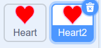
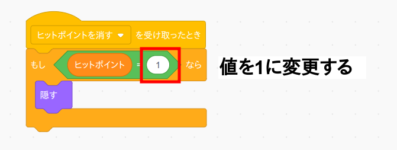
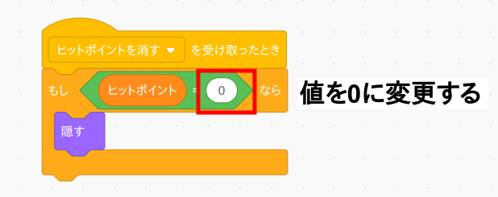
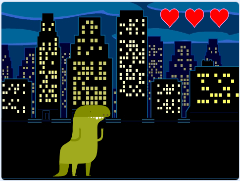

これだとヒットポイントがひとつしか表示されないので、ヒットポイントを複製して3つ並べます。
まずヒットポイント(Heart)を複製して「Heart2」を作ります。
次に「Heart2」のコード画面を開いてプログラムを次のように変更します。
もう一度ヒットポイント(Heart)を複製して「Heart3」を作り、「Heart3」のコード画面を開いてプログラムを次のように変更します。
一旦旗ボタンを押して動作確認して下さい。 確認したら「Heart」「Heart2」「Heart3」の位置や大きさをうまく調整して並べ替えます。
もしヒットポイントの表示が消えている場合は表示してから並べ替えると良いでしょう。